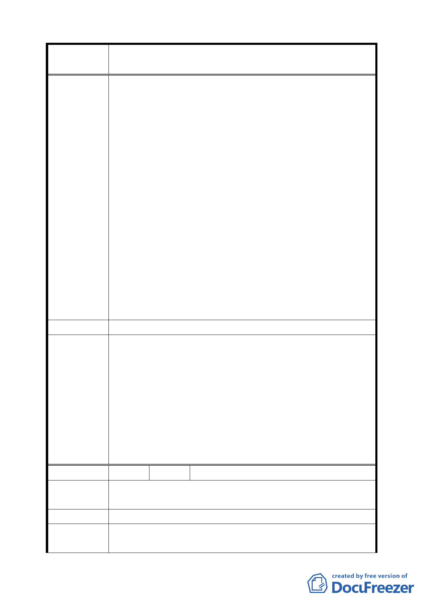

案
名
變更臺北市士林區至善段五小段 80、81、117 地號等加油站
用地為公園用地細部計畫案
求變更加油站用地作其他用途，台北市政府能有同一套說
詞嗎？
5.尤其甚者，貴府承辦人員，在展覽公告說明柒，竟然在柒
之（二）說明內容加畫底線，強調:因本府都市發展局正與
兆亨公司就廢止本案基地建造執照一案進行行政訴訟，惟
不論訴訟結果如何，兆亨公司不得以本案變更前已取得建
造執照為由，要求本府回復原都布計畫。此種針對兆亨公
司不利之詳細說明，已經違反行政訴訟法及行政程序法，
置司法判決程序於不顧。
6.為此，兆亨公司嚴重抗議貴府承辦人員擅自違法進行變更
臺北市士林區至善段80、8l、ll7地號等加油站用地為公園用
地細部計畫案，並嚴正聲明：
（1）臺北市士林區至善段80、8l、ll7地號變更細部計畫案應
立即停止，待行政訴訟判決勝敗後再予處理本變更細部
計畫案。
（2）若貴府執意違法辦理，兆亨公司一定對承辦、決策及督
導之公務員進行民刑事責任追訴。
建 議 辦 法 （同上）
1.同意發展局所提說明：「本加油站用地變更係考量本基地鄰
近故宮博物院，在與該院文獻大樓僅有 330 公尺距離設置
加油站，一旦發生意外，恐將影響故宮典藏國寶文物。其
次，故宮院方自 91 年起即已多次函請本局將加油站用地變
委 員 會 決 議 更為公園用地，以維該院文物安全。本基地 2 公里範圍內
即有 4 座加油站，足敷周邊民眾加油所需，且本基地於 76
年即已規劃為加油站用地，逾 20 年未開闢，顯示當地並無
加油站設置之迫切需求」。
2.本案修正後通過。
編 號 2 陳情人 徐銘鴻
贊成興建公園，接下來的公園改建需要居民的意見，需要居
陳 情 理 由 民的同意及意見，重新表決。
建 議 辦 法 停止建加油站。
錄案供參。有關變更後公園用地得採多目標使用，後續開闢
委 員 會 決 議 事宜由市府另循行政程序辦理。
38